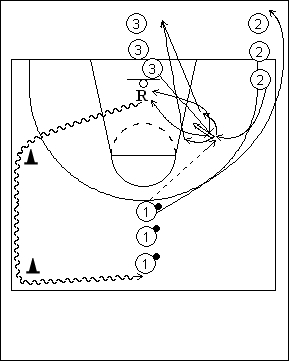

Catégorie : REBOND (Reb-02)
Déroulement
- Trois files. Les ballons se trouvent dans la file 1 au-delà de la ligne des trois points.
- Le premier joueur de la file 2 appelle le ballon du premier de la file 1. Pendant ce temps, le premier joueur de la file 3 effectue le close out vers 2 en levant les bras pour contrarier quelque peu le shoot. Attaquant et défenseur jouent le rebond.
- 2 va dans la file 3. 3 dribble vers la file 1 et 1 va en 2.
Coaching points
- C’est surtout un travail de rebond. Au début, on impose donc le côté du départ de l’attaquant pour le rebond (vers l’intérieur / vers la baseline); de même, on impose le type de boxing out (front pivot / reverse pivot).
- Plus on progresse dans le drill, plus on exige une grande agressivité des deux joueurs. En cas de rebond offensif, on continue en situation de un contre un.